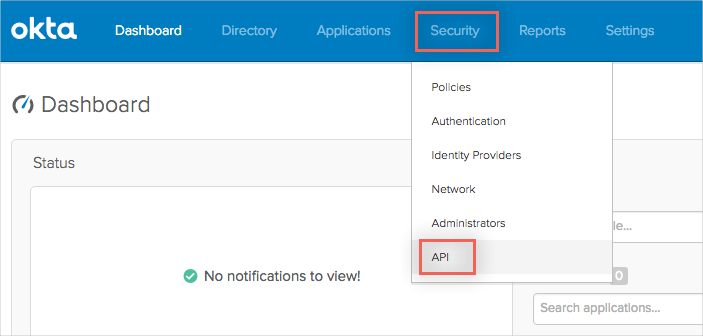
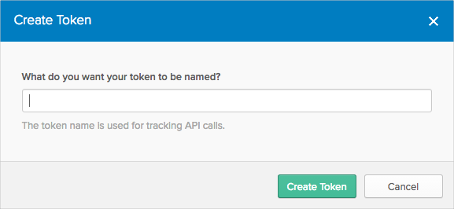
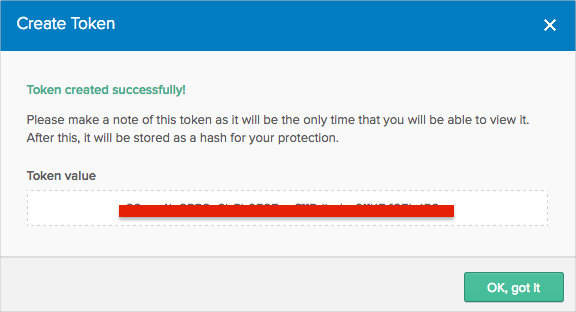
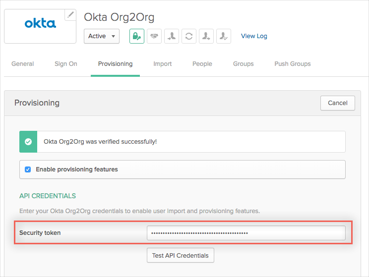
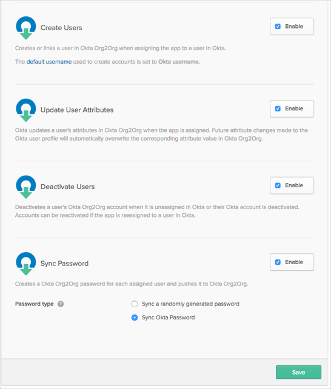
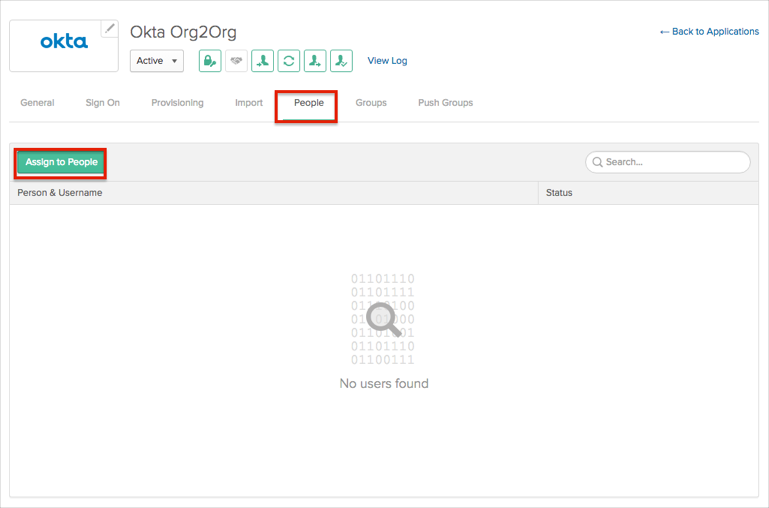
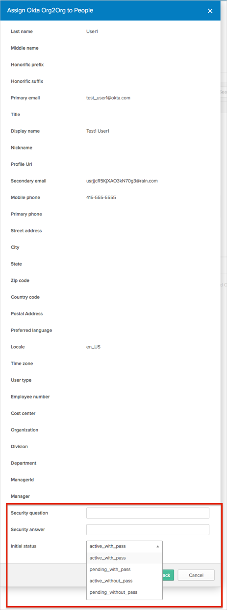

This guide provides the steps required to configure Provisioning for Org2Org, and includes the following topics:
Import New Users
New users created in the third party application will be downloaded and turned in to new AppUser objects, for matching against existing OKTA users.
Import Profile Updates
Import User Schema
Push New Users
New users created through OKTA will also be created in the third party application.
Push Profile Updates
Updates made to the user's profile through OKTA will be pushed to the third party application.
Push Password Updates
Updates made to the user's password through OKTA will be pushed to the third party application.
Push User Deactivation
Deactivating the user or disabling the user's access to the application through OKTA will deactivate the user in the third party application.
Reactivate Users
Profile Master
Before you start configuring provisioning for Okta Org2Org, you need to do the following:
Obtain your API Token:
Log in to the Okta Hub Organisation as an administrator:
Navigate to Security > API:
Enter your token name, then Create Token:
Make a copy of your newly generated token:
Verify the Okta Org2Org app’s General Settings in Okta Spoke organization:
Make sure that you have the correct base URL to your Hub Org in Okta (for example: https://my-org.okta.com).
Configure your Provisioning settings for Okta Org2Org as follows:
Check the Enable provisioning features box.
In the API Authentication, paste your API Token you saved into the Security Token field.
Scroll down and select the Provisioning Features you want to enable.
Click Next, then click Save.
You can now assign people to the app, if needed (see below).
To assign users to the Okta Org2Org app:
Select the People tab, then click Assign to People:
In the Assign Okta Org2Org to People dialog, select a user, then click Assign button:

You can set Security Question/Answer and select the Initial Status for provisioned user:
